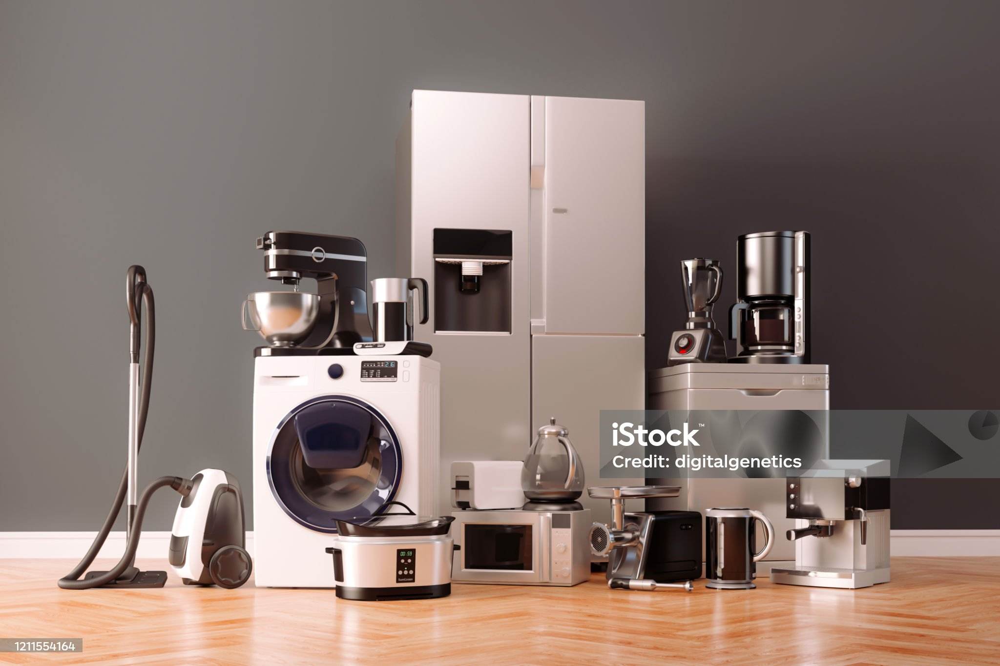
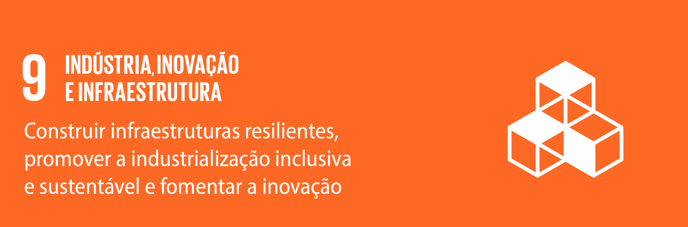
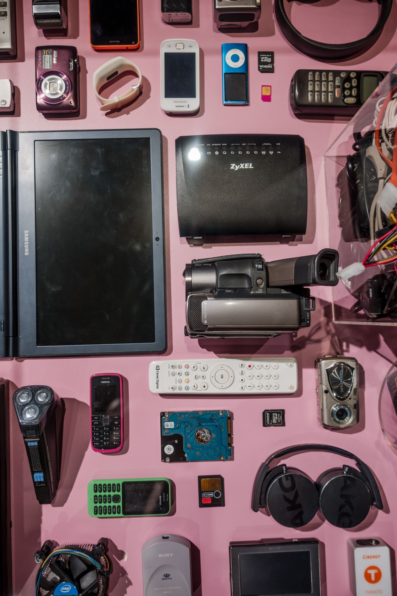
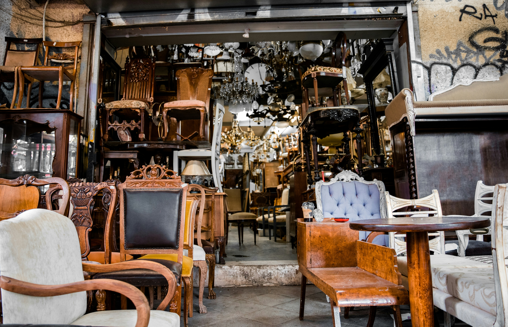
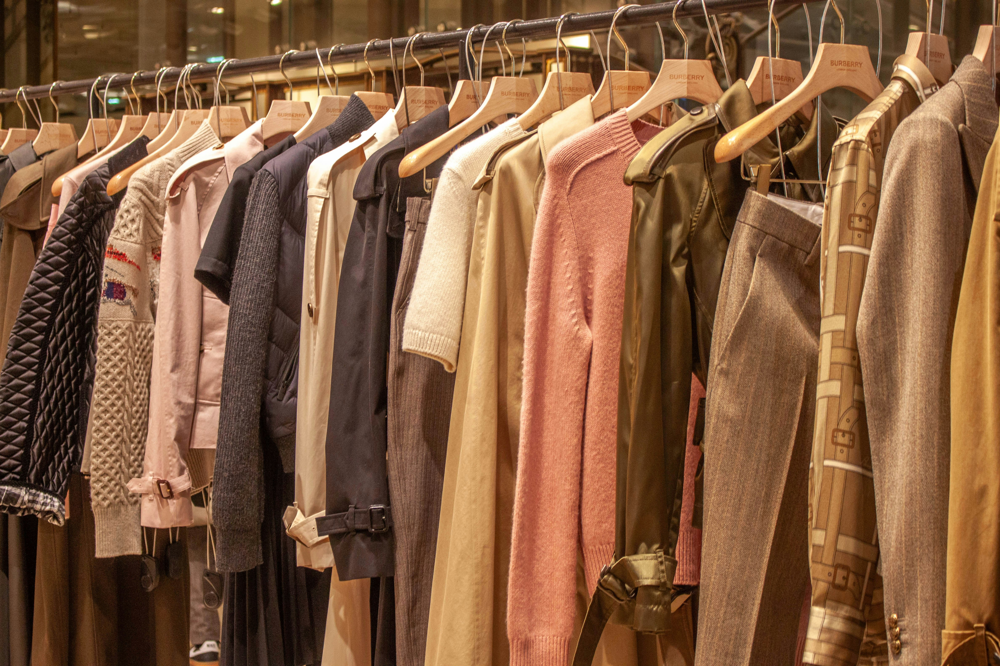
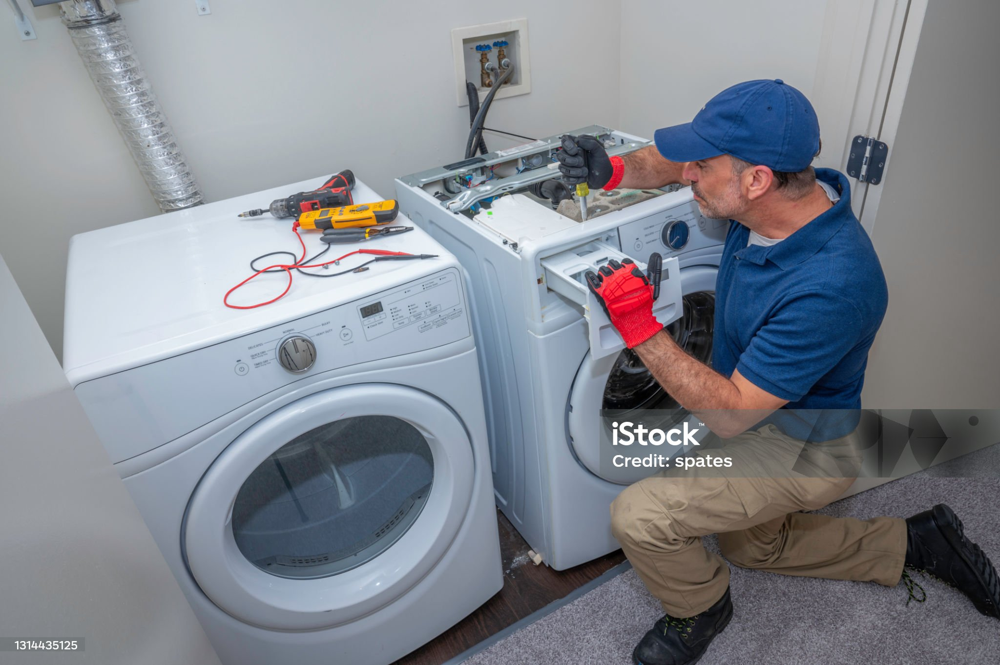
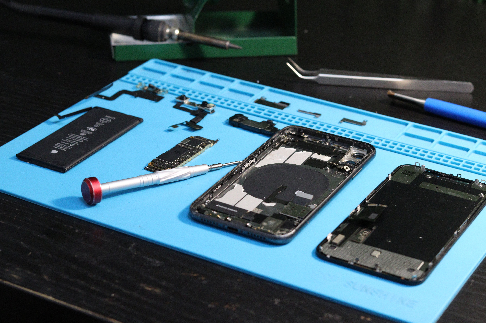
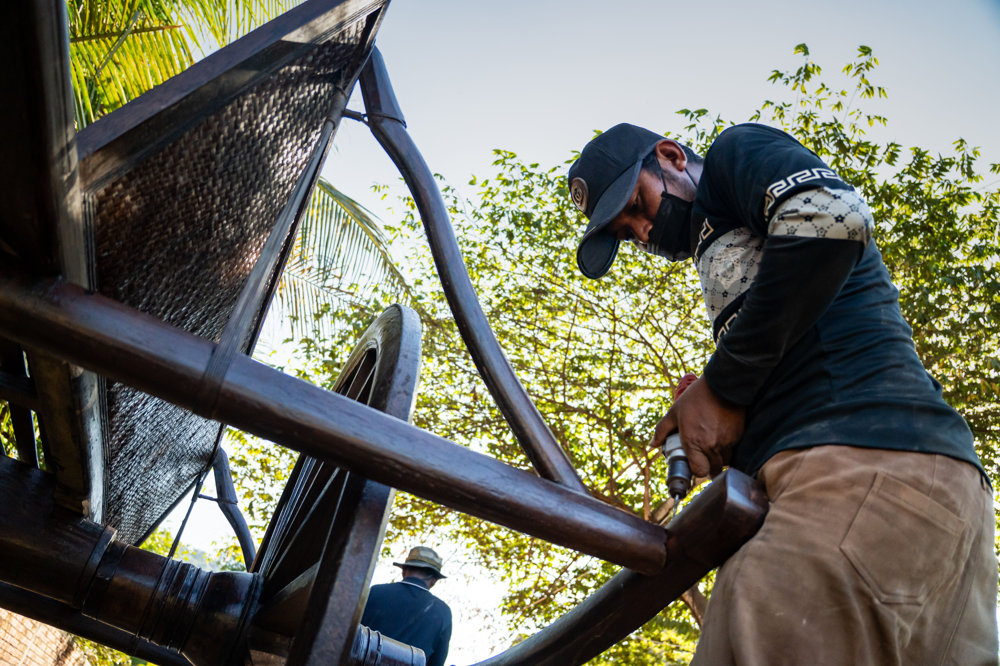
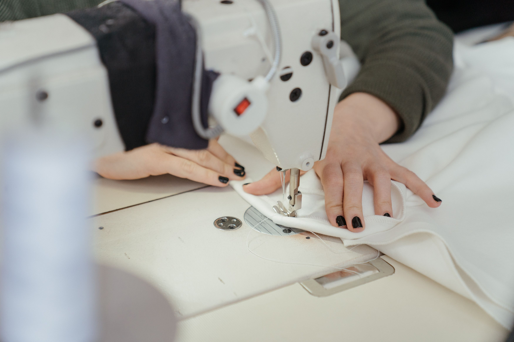

Eletrodomésticos
Geladeiras, máquinas de lavar, micro-ondas e outros.
Conectamos quem tem um item danificado a técnicos e artesãos da região.
Seja um parceiroO CirculaHub é um espaço comunitário para consertar e dar nova vida a eletrodomésticos, eletrônicos, móveis e roupas. Menos lixo, menos gasto e mais trabalho para quem é da região.


Geladeiras, máquinas de lavar, micro-ondas e outros.

Celulares, notebooks, fones e videogames.

Restauração, pintura e reaproveitamento de peças.

Ajustes, remendos e upcycling de peças antigas.
Todo mês fazemos encontros abertos para ensinar pequenos reparos. Traga seu item e aprenda junto com quem entende.



